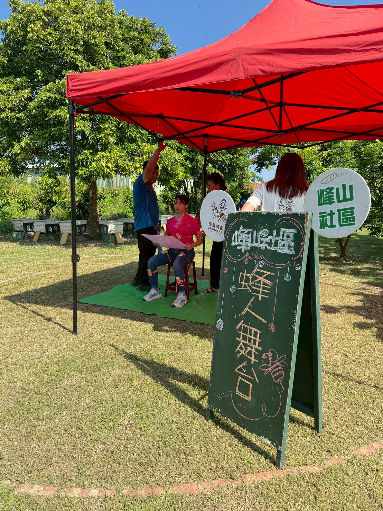
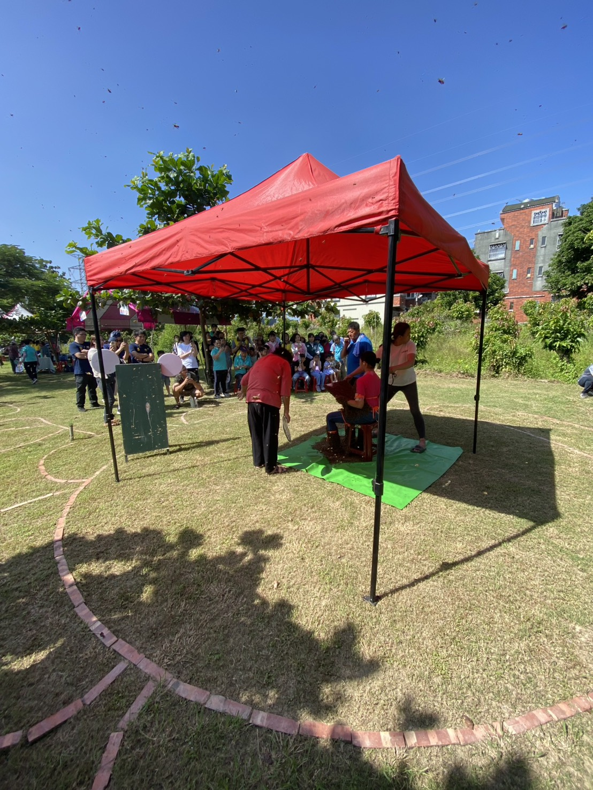
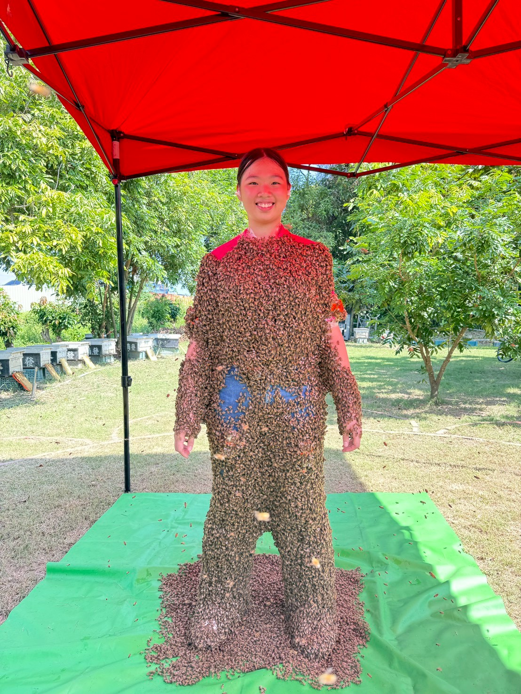

嗡嗡嗡，嗡嗡嗡，我是一隻小蜜蜂...
10/14/2025
如果沒有蜜蜂，其實人類當然還可以用其他方式來幫助授粉，比如風力授粉、人工授粉 ，或是依靠其他昆蟲像蒼蠅。不過，這些方法的效果都不如蜜蜂。風力授粉完全靠自然風勢 ，效率不穩定，很容易導致果實畸形或產量下降；人工授粉雖然可行，但需要大量時間和人 力，效率和品質都比不上蜜蜂，也會增加農民的負擔；至於蒼蠅授粉更不理想，不但容易帶 來環境污染和衛生問題，授粉效率也相當低。相比之下，蜜蜂的授粉不僅快速、均勻，還能 有效提升作物的產量與品質。因此，蜜蜂在生態系統中有很重要的地位，不只是因為牠們會 產蜂蜜，更因為牠們是最主要的授粉者，和人類的糧食安全息息相關。
11/16/2025
SDGs4-優質教育
透過蜂人表演這種創新的教育方式，它成功打破了傳統書桌課本的學習框架，不僅結合了環境保護、生物學等領域，還幫助不同年齡層的學生更直觀地了解生物多樣性和可持續性。這樣的表演不僅能增強學生對自然世界的認識，還能激發他們對全球環境問題的關注，從而符合SDGs 4 優質教育的目標，推動更加包容、創新和可持續的學習模式。這樣的教育方式，通過跨學科的內容和生動的表現形式，讓學生在愉快的學習過程中掌握科學知識，並深刻理解環境保護與可持續發展的核心價值。



市立三民家商 資處一勤
王俞絜
在這次的專題裡我負責的是網頁的部分，在這次的專題裡我學會了更多在課堂上還沒學到的程式碼， 透過多個程式碼拼湊出我理想中的網頁，但有一些程式碼拼湊起來就會很奇怪所以都需要不斷的嘗試。 更改文字的顏色也是網頁裡很重要的一部份。比同齡人更早學會我很高興！
市立三民家商 資處一勤
楊伃媜
在這次的專題裡我負責的是海報的部分，這是我第一次做海報，沒有想到一面的海報要塞下個專題的重點是多困難的事! 刪刪減減終於改好了內容，結果配色及照片大小擺放位置才是最大的難題。 在經過和色彩學教授和主任的一翻教導下，看順眼的海報誕生了！